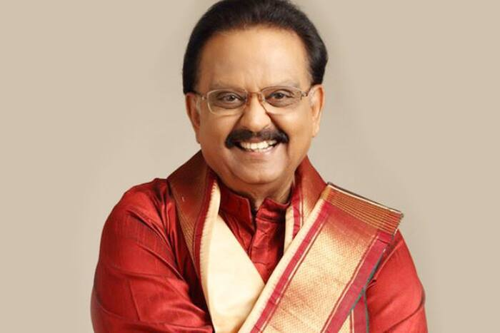

SP Balasubramanyam
1946 - 2020
Singer,actor,music, director, voice actor,producer
Sripathi Panditaradhyula Balasubrahmanyam[a] (4 June 1946 – 25 September 2020), shortened as S. P. Balasubrahmanyam or SPB, was an Indian playback singer, television presenter, actor, music composer, dubbing artist, and film producer.[7][8] He is widely regarded as one of the greatest Indian singers of all time.[9][10][11] He predominantly worked in Telugu, Tamil, Kannada, Malayalam, and Hindi films and sang in a total of 16 languages. list of songs
About The Legend of musical world in indian times
- S. P. Balasubrahmanyam (SPB) was a legendary Indian playback singer, actor, and music director, born on June 4, 1946, in Nellore, Andhra Pradesh, India. He began his singing career in 1966 with the Telugu film industry and went on to become one of the most prolific and celebrated playback singers in Indian cinema, recording thousands of songs in multiple languages including Telugu, Tamil, Kannada, Malayalam, and Hindi.
- SPB's versatile voice and mastery over various musical genres earned him widespread recognition and popularity. Apart from singing, he also ventured into acting, predominantly in supporting roles, and worked as a music director and film producer.
- Throughout his illustrious career, SPB received numerous awards and accolades, including several National Film Awards and Filmfare Awards. Some of his most iconic songs include "Tere Mere Beech Mein" from "Ek Duuje Ke Liye," "Mannil Indha Kaadhal" from "Keladi Kanmani," and "Vennilave Vennilave" from "Minsara Kanavu."
- SPB's contribution to Indian music and cinema remains unparalleled. He passed away on September 25, 2020, leaving behind a rich legacy cherished by fans and music lovers worldwide.